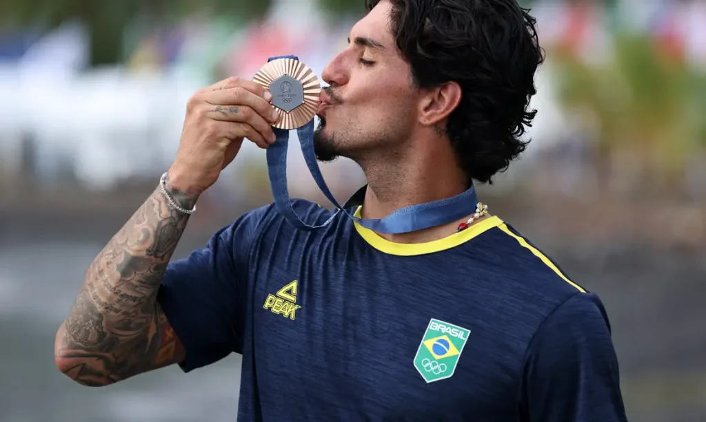

O surfe ou surf é um esporte feito na superfície (seu nome provém da palavra inglesa “surface”) da água. Basicamente, consiste no deslize pelas ondas do mar através de uma prancha. O surfe é originário da Polinésia, um conjunto de ilhas do Pacífico. Acredita-se que o esporte surgiu quando pescadores perceberam que usando uma tábua de madeira, era mais fácil chegar à margem do mar.
Em 1778, o navegador inglês James Cook chegou ao arquipélago do Havaí e levou a idéia do esporte para a Europa. Na década de 50, o surfe ganhou grande popularidade nos Estados Unidos, especialmente no Estado da Califórnia, se tornando uma parte da cultura do mesmo. A partir das décadas de 70 e 80, iniciaram-se os campeonatos profissionais.
Os acessórios principais no surfe são as pranchas, que podem possuir diversos tamanhos e formatos. Uma boa prancha é indispensável para o bom desempenho do esporte. É recomendável que iniciantes optem pelas pranchas maiores, conhecidas como long boards. Além de ser um esporte que proporciona um intenso contato com a natureza, o surfe trabalha com todos os grupos musculares e desenvolve a coordenação motora do indivíduo.
Assim como todos os esportes, a prática do surfe requer alguns cuidados. É recomendável a realização de aulas de surfe antes de se aventurar no mar em cima de uma prancha. É na aula que o aluno recebe noções referentes a movimentos básicos, alongamento, ondas, marés, ventos, etc. Além disso, deve-se ter cautela na escolha das ondas, visto que marouços (ondas grandes) podem ser perigosos para iniciantes. O surfe é apaixonante para seus adeptos, e se tomados os cuidados necessários, continua sendo uma ótima opção de esporte.
Gabriel Medina é um atleta brasileiro que compete no surf masculino. Nas Olimpíadas de Paris, em 2024, foi medalha de bronze. Confira sua premiação abaixo:

Tatiana Weston-Webb é um atleta brasileira-americana que compete no surf feminino. Nas Olimpíadas de Paris, em 2024, foi medalha de prata. Confira sua premiação abaixo: